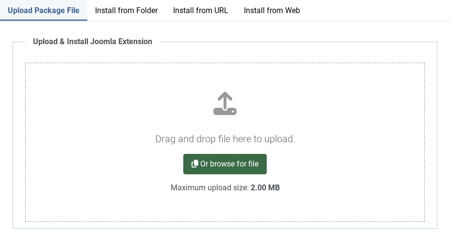
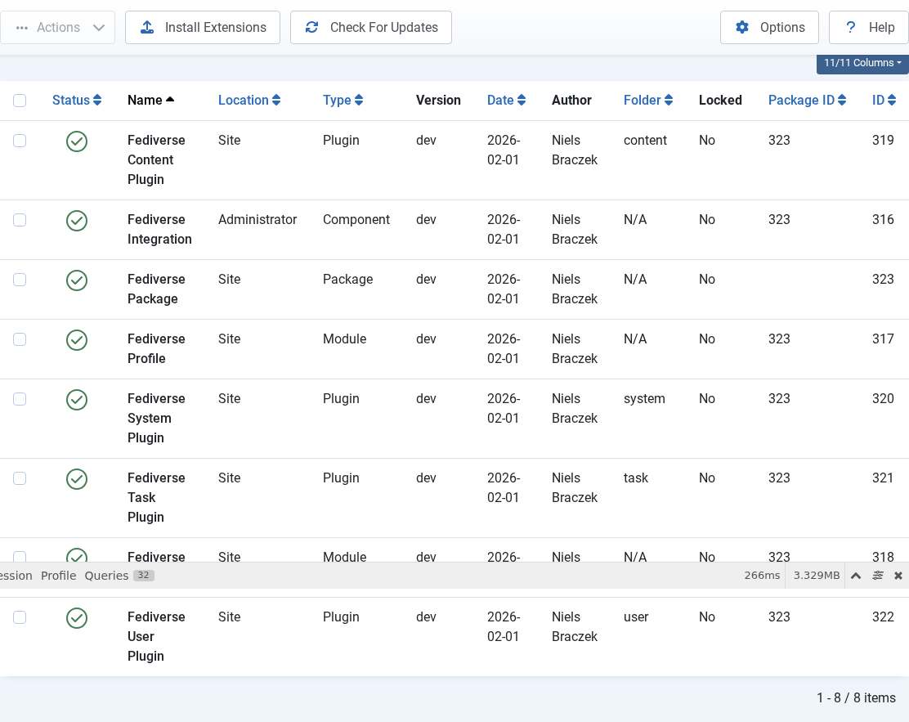
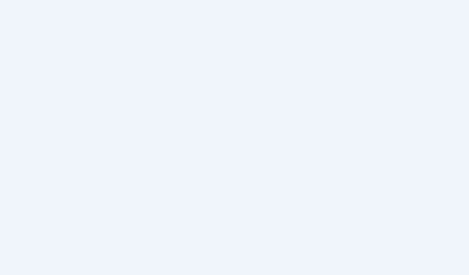
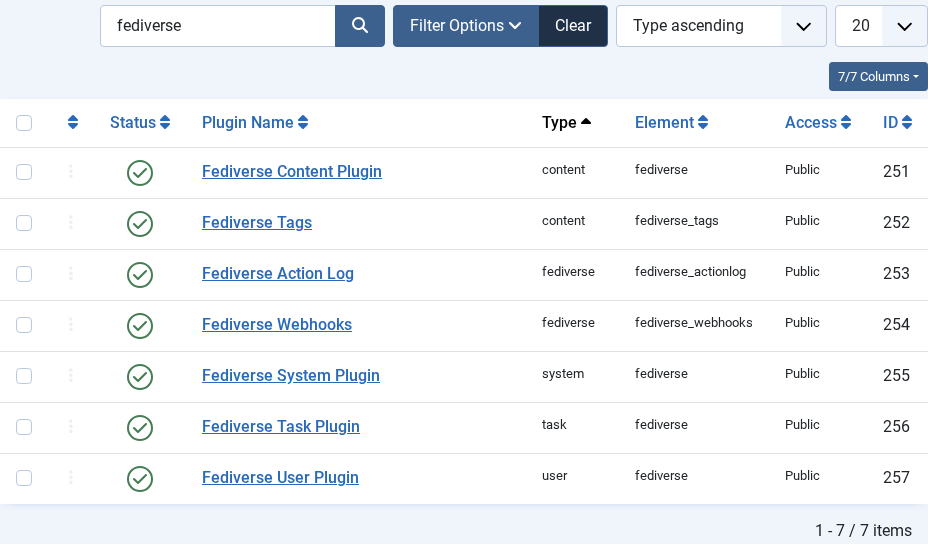
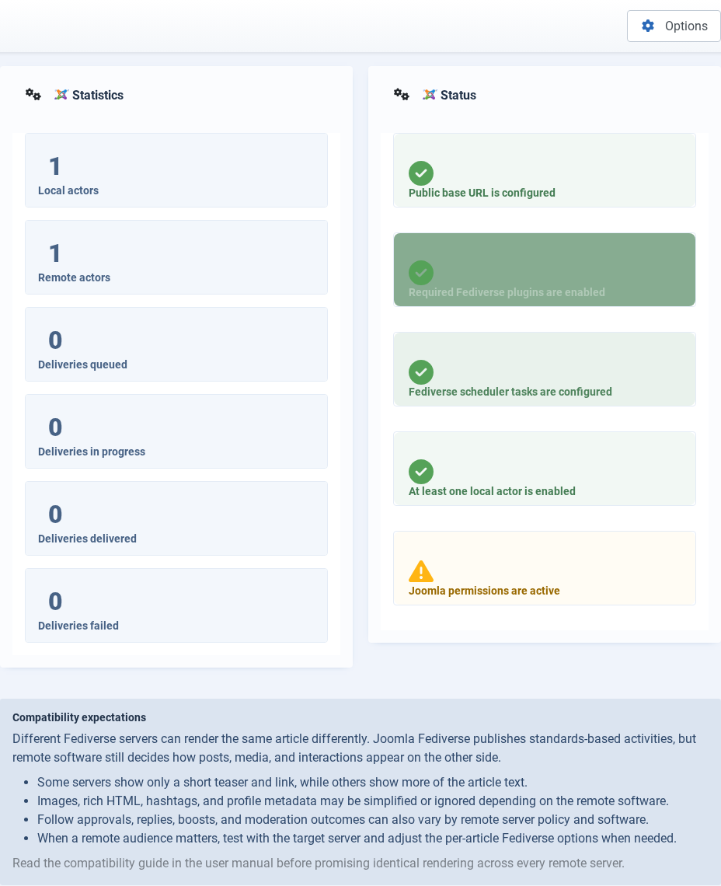

Installing Joomla Fediverse
| 🏠 Tutorial Home | Configuration → |
| This guide walks you through downloading, installing, and verifying Joomla Fediverse — the Joomla ActivityPub extension that turns your Joomla 6 site into a Fediverse citizen. |
| ## Prerequisites |
| - Joomla 6.x or later - PHP 8.2 or later - A publicly accessible URL (ActivityPub requires HTTPS in production; HTTP is acceptable for local testing) |
| ## Step 1: Download the Package |
The distribution archive is a single ZIP file named
pkg_fediverse.zip. It bundles all sub-extensions — the
component, four plugins, and the module — so a single install step is
all you need. |
Download the latest release from the project repository’s Releases
page and save pkg_fediverse.zip to a location you can
browse to from your browser. Do not unzip it; Joomla’s
Extension Manager expects the archive as-is. |
| ## Step 2: Install via Extension Manager |
1. Log in to your Joomla administrator back-end. 2. Open
System in the top navigation bar, then choose
Extensions → Install from the System panel. 3. On the
Install page, select the Upload Package File tab. 4.
Click Browse for file (or drag the ZIP onto the drop
zone) and select pkg_fediverse.zip. |
 The Extension Manager upload form. Navigate to System → Extensions → Install. |
| 5. Click Upload & Install. Joomla will unpack and register every sub-extension in one pass. |
After a successful install the page reloads and displays a green
confirmation bar. The message lists each installed item: the component
com_fediverse, four plugins
(plg_system_fediverse, plg_content_fediverse,
plg_task_fediverse, plg_user_fediverse), and
the module mod_fediverse_reactions. |
 Successful installation shows a green confirmation message listing all installed sub-extensions. |
| ## Step 3: Enable Required Plugins |
| Installation registers the plugins but leaves them disabled so you can review your site before switching anything on. Four plugins are installed; two are required for basic federation and two are optional features: |
1. System - Fediverse
(plg_system_fediverse) — Required. Handles
HTTP Signature verification and request routing for all ActivityPub
endpoints. 2. Content - Fediverse
(plg_content_fediverse) — Required. Hooks
into article save and publish events to queue outbound activities. 3.
Task - Fediverse (plg_task_fediverse) —
Optional. Registers the background delivery and cleanup tasks
with Joomla’s Scheduler. Enable when you are ready to configure
scheduled tasks (see Tutorial 09). 4.
User - Fediverse (plg_user_fediverse) —
Optional. Handles per-user federation opt-out preferences.
Enable when you need that feature (see Tutorial
07). |
| To enable the required plugins: |
1. Navigate to System → Plugins in the
administrator menu. 2. In the search bar at the top of the Plugins list,
type fediverse and press Enter. The list narrows to the
four Joomla Fediverse plugins. |
 Filter the Plugins list by “fediverse” to find both plugins. |
| 3. Click the status toggle (or the red circle icon) next to System - Fediverse to enable it. The icon turns green. 4. Repeat for Content - Fediverse. 5. Confirm that both required plugins now show a green checkmark in the Status column. |
 Both required plugins should show a green checkmark in the Status column. |
| > Note: Enable Task - Fediverse and User - Fediverse only when you need those features. They are not required for basic federation. |
| ## Step 4: Verify Installation |
| With both required plugins enabled, open Components → Fediverse from the administrator menu. You should land on the Fediverse Dashboard, which confirms the extension is wired up and active. |
| On a fresh install every counter on the dashboard will read zero — there are no local actors yet and the delivery queue is empty. That is expected; you will populate actors in the next tutorial step. |
 The Fediverse Dashboard confirms the extension is active. Actor and delivery counts will be zero on a fresh install. |
| ## Common Issues |
| | Symptom | Likely cause | Solution | |———|————–|———-| | Package install fails with “Could not find install package” | ZIP file is corrupted or incomplete | Re-download the package and retry | | Plugins not visible after install | Extension cache not cleared | Go to System → Clear Cache and try again | | Dashboard shows error after enabling plugins | Another plugin conflict | Temporarily disable other system plugins and re-test | | HTTPS warning in logs | Site not served over HTTPS | In development, HTTP is fine; in production configure SSL | |